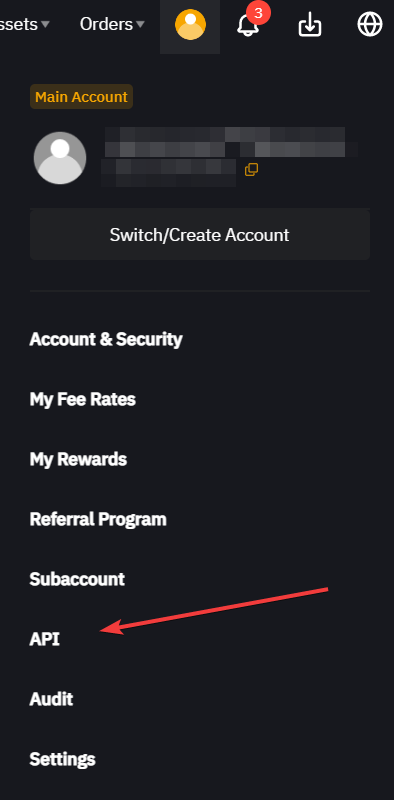
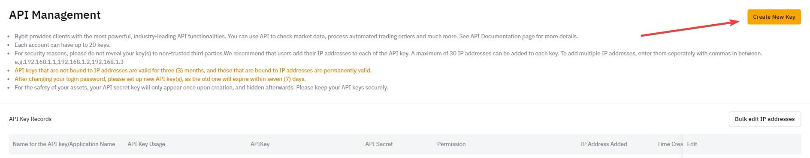
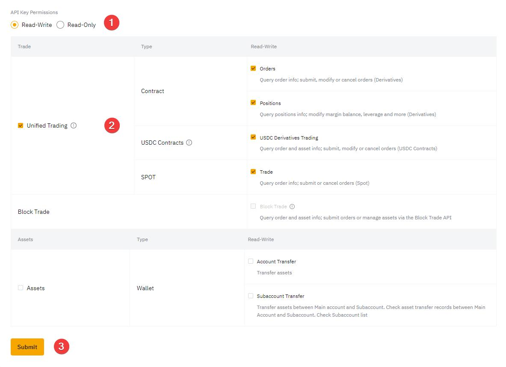
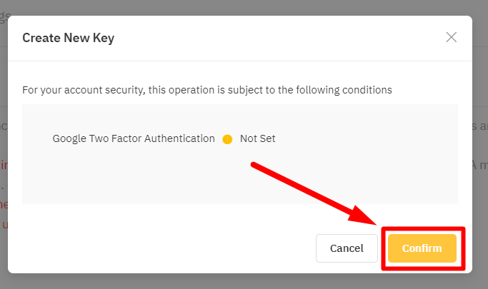

Introduction
Generating API keys from ByBit allows users to integrate and automate their trading activities with various
software and applications. This documentation provides a detailed guide to creating and managing API keys on ByBit.
Prerequisities
Before you begin, ensure you have:
- A registered and verified ByBit account
- Two-factor authentication (2FA) enabled for additional security
Accessing the API Management Page

- Navigate to the ByBit website and log in to your account.
- Once logged in, click on your profile icon located at the top right corner of the page.
- From the dropdown menu, select "API Management".
Navigating the API Management Page
- On the API Management page, you will see options to create and manage your API keys.
- Click on the "Create New Key" button to start the process.

Logging into your account
If you are not already logged in, you will be prompted to log in to your ByBit account. Enter your email and password,
followed by the 2FA code if enabled.
Creating a New API Key
- After accessing the API Management section, click on the "Create New Key" button.
- You will be presented with options to configure your new API key.
Selecting API Permissions
- Choose the permissions you want to assign to your API key (e.g., Read, Write, Withdraw).
- Ensure you only grant the necessary permissions to maintain security.

Naming Your API Key
- Provide a unique name for your API key to easily identify its purpose.
- Click "Confirm" to create the API key.

Managing API Keys
Editing Existing API Keys
- To edit an existing API key, go to the API Management page.
- Find the API key you want to edit and click on the "Edit" button.
- Make the necessary changes and click "Save".
Deleting API Keys
- To delete an API key, navigate to the API Management page.
- Locate the API key you want to delete and click on the "Delete" button.
- Confirm the deletion when prompted.
Security Best Practices
- Regularly review and update your API keys.
- Revoke API keys that are no longer in use.
- Use IP whitelisting to restrict access to trusted IP addresses.
- Enable 2FA for additional security.
Troubleshooting Common Issues
- Ensure you have the correct permissions set for your API key.
- Verify that your API key is not expired or revoked.
- Check your network connection and ensure there are no IP restrictions blocking access.
- Contact ByBit support if you encounter persistent issues.
By following this guide, you can efficiently generate and manage your API keys on ByBit, ensuring secure and
seamless integration with your trading applications.